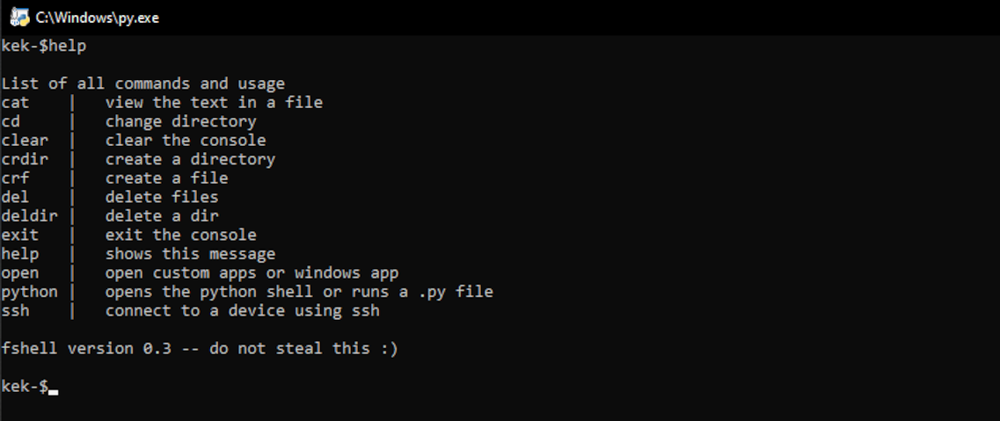
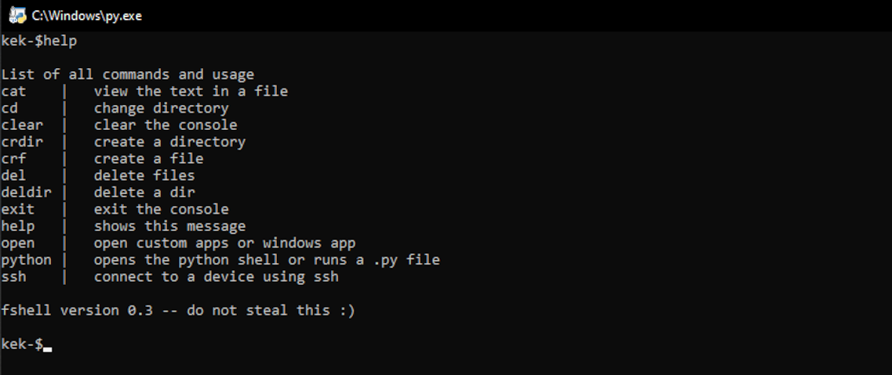

Command line app
 This console based app acts like a command prompt and interacts with the system
You can read the full guide on my github repository
My most important projects
 This console based app acts like a command prompt and interacts with the system
You can read the full guide on my github repository
This app has two functions: Autoclicker, Spammer; it is also integrated on the fshell.
Autoclicker: it just click faster than you
Spammer: it spams a portion of text
Simple notepad wich is integrated in the fshell